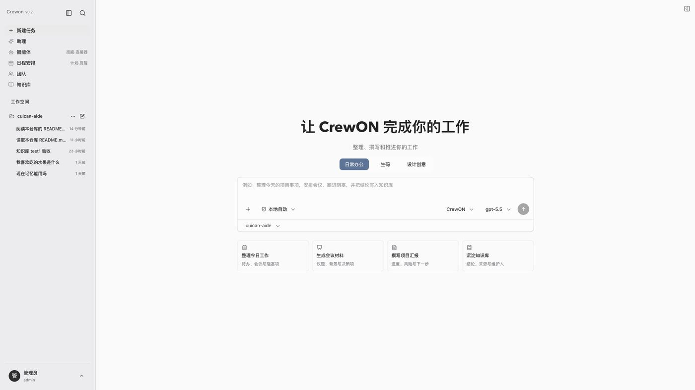
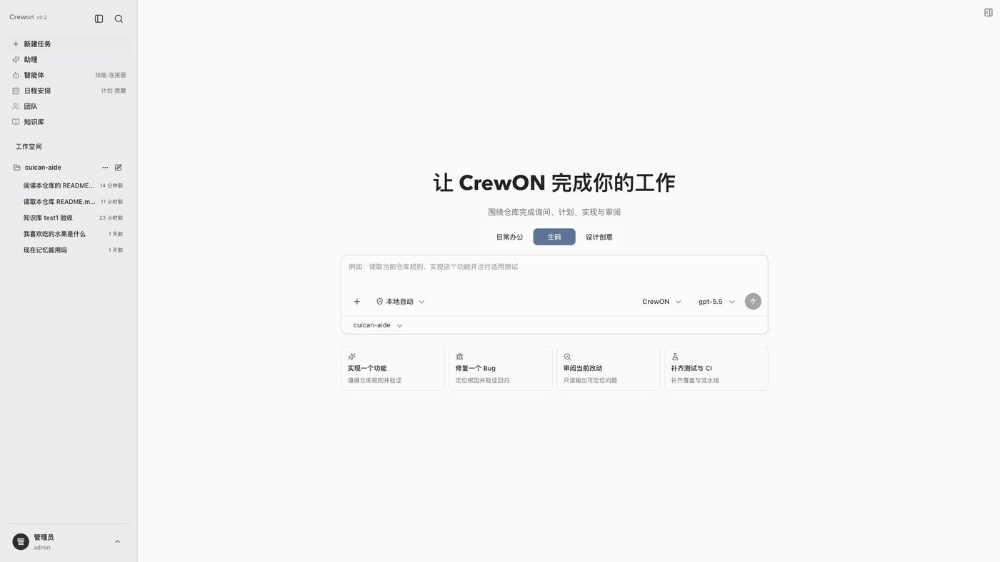
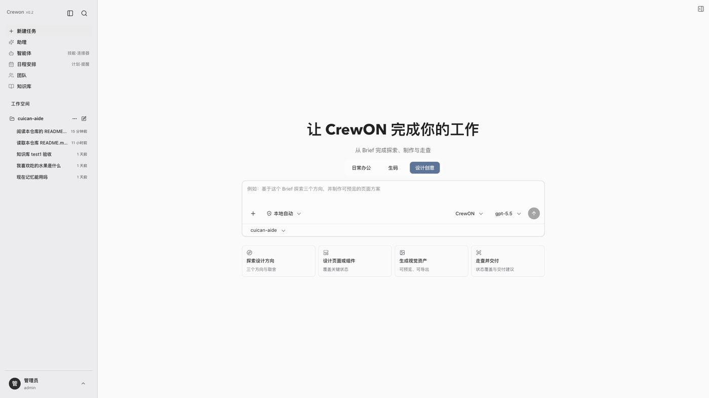
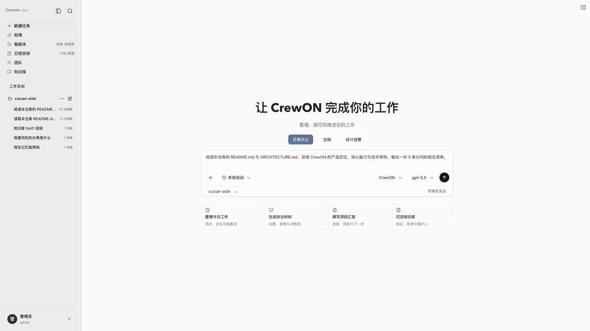
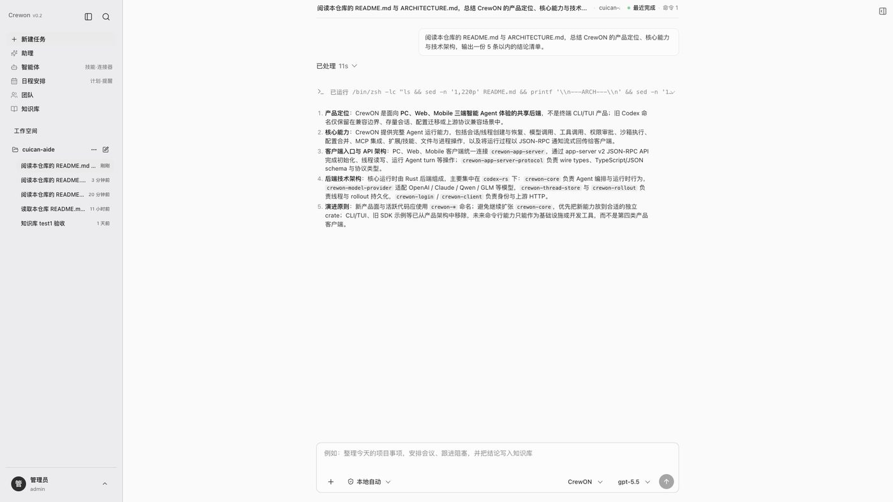
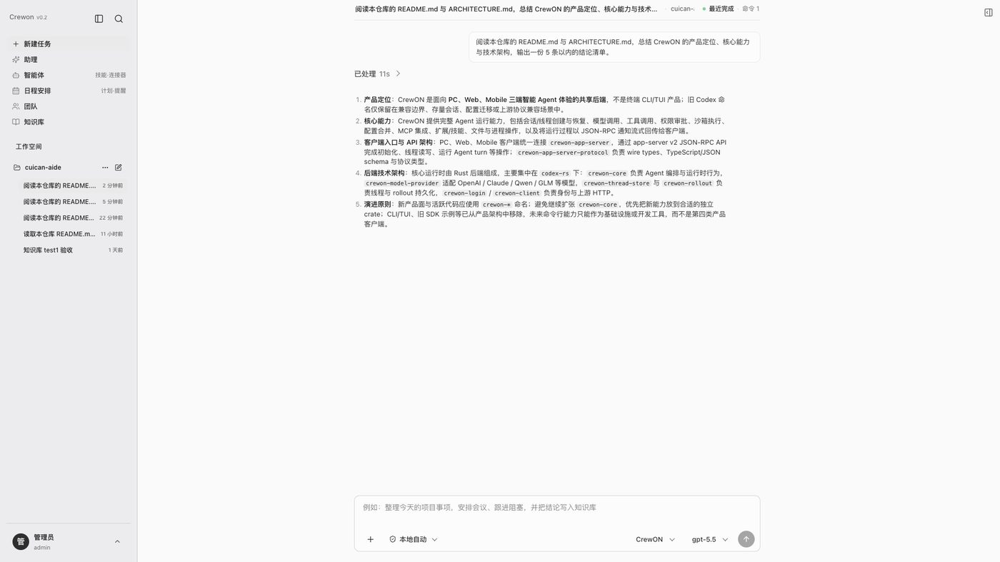
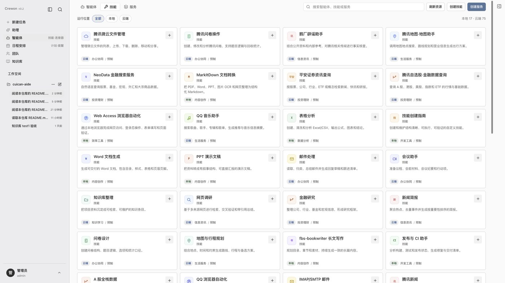
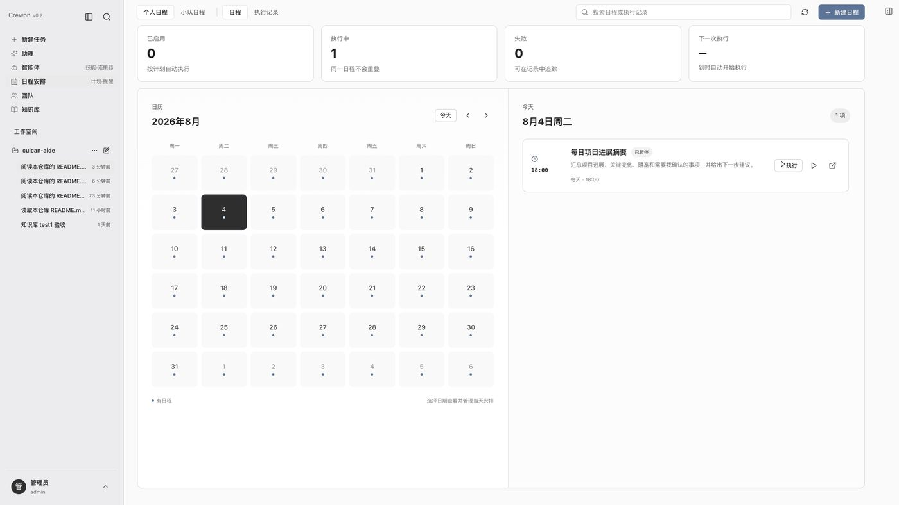

让 AI 真正替你把工作做完
今天大部分企业已经用上了 AI 对话工具。但真实的工作场景里，员工仍然要做这些事：
问题的本质是：AI 能"回答"，但不能"完成"。
CrewON 要做的，是把 AI 从一个回答问题的窗口，变成一个能真正进入工作流程、完成交付、并且过程可查可控的工作伙伴。

CrewON 是一款面向个人、专业团队和企业协作的智能工作平台。
用一句话概括：
你描述目标，CrewON 组织能力去完成，并把成果、过程和依据一并交给你。
它把大模型、企业知识、办公工具、代码仓库、设计资产、外部系统连接器统一组织到一个任务入口里。用户不需要学习提示词技巧，也不需要在多个工具之间来回搬运信息。
| 场景 | 用户输入什么 | CrewON 交付什么 |
|---|---|---|
| 日常办公 | "整理今天的项目事项，安排会议、跟进阻塞，并把结论写入知识库" | 项目汇报、会议材料、行动项清单、知识条目 |
| 生码 | "读取当前仓库规则，实现这个功能并运行适用测试" | 代码改动、测试证据、审阅发现、可定位的验证结果 |
| 设计创意 | "基于这个 Brief 探索三个方向，并制作可预览的页面方案" | 设计方向、页面与组件、视觉资产、交付说明 |
每个场景有各自的任务方式、上下文对象和完成标准，不是简单换个提示词模板。


以下对比用于说明产品定位，不代表对任何具体厂商最新版本的功能评测。
| 维度 | 通用对话助手 | 低代码 Agent 平台 | 代码智能助手 | CrewON |
|---|---|---|---|---|
| 用户做什么 | 提问、复制答案 | 搭建并发布 AI 应用 | 在 IDE 里写代码 | 描述目标，收结果 |
| 能否操作真实文件 | 通常不能 | 依赖节点配置 | 可以 | 文件、终端、Git、浏览器统一接入 |
| 多环节复杂任务 | 需要人来拆解 | 需要预先画好流程 | 单任务为主 | 主控 Agent 自动拆解、分工、验收 |
| 工作上下文保留 | 仅对话历史 | 仅应用配置 | 仅当前仓库 | 任务、空间、资源、产物与长期记忆 |
| 结果可信度 | 无法核对 | 看日志 | 看 diff | 过程、证据、来源、审批记录全程可查 |
| 交付形态 | 一段文本 | 一个应用 | 代码改动 | 文档、代码、设计资产、报告与验证证据 |
关键差异有三点：
用户只需要在一个输入框里描述目标，可以附加文件、图片、工作空间和能力资源，选择模型和执行主体，然后开始任务。

任务开始后，CrewON 会实时展示它在做什么：推理过程、工具调用、需要确认的操作、产生的文件。用户随时知道进展到哪里，而不是干等一段最终文本。

CrewON 在权限和沙箱约束下可以：
任务完成后交付的不是一段描述，而是结构化的、可以直接使用的成果，并附带过程依据。
CrewON 内置了大量可直接使用的专业技能和企业系统连接器，无需从零配置。
专业技能：文档生成、演示文稿制作、表格分析、邮件处理、会议助手、知识整理、网页调研、金融研究、新闻简报、问卷设计、行程规划、长文写作、发布与 CI 等。

企业系统连接器：企业微信、飞书、钉钉、腾讯文档、腾讯会议、金山文档、TAPD、CNB、腾讯微云、ima 知识库、QQ 邮箱、腾讯地图、腾讯新闻，以及 GitHub、Notion、Figma、Sentry 等常用外部服务。
企业也可以把内部方法沉淀为自定义技能、把内部系统封装为连接器，在不同任务和团队中复用。
用户既可以使用 CrewON 默认智能体处理通用任务，也可以配置专业智能体：指定角色定位、模型、工作指令、权限范围和可用能力。

对于持续推进、需要分工和验收的复杂任务，用户可以进入"办公室"：
用户始终通过一条主会话掌握目标、进度、审批和最终结果，不需要在多个对话里来回切换。
CrewON 可以引用企业知识库、工作空间知识文件和历史结论，把重要结果沉淀下来供后续任务使用。
记忆内容区分"待确认""已接受""已拒绝"三种状态，只有经过确认的内容才会进入后续任务的上下文，避免错误信息扩散。
固定重复的工作可以保存为自动化：设定任务内容、执行主体、触发时间和交付方式，CrewON 按计划自动执行并把结果发给你。

典型用法：每天早上汇总项目进展和阻塞项、每周生成周报、定期巡检项目状态。
企业采用 AI 工具最关心的是可控性。CrewON 在这一点上的设计原则很明确。
用户身份、所属空间、可访问资源和执行权限全部由服务端解析和校验。客户端只能提交用户的选择，不能自行声明权限结果。
工具返回内容、外部知识和用户文件默认作为不可信数据处理，不会被直接当作系统指令执行。敏感内容和密钥不会被无限写入日志。
每个任务产物都记录来源：来自哪个任务、哪次运行、哪个成员、哪个文件路径或外部引用，并可附带摘要和验证状态。界面只展示真实发生的执行事件，不用前端动画假装进度。
以下内容面向关注技术架构的读者，业务读者可以跳过。
PC、Web 客户端共用同一套后端服务、执行运行时和任务状态。客户端只负责交互和呈现，核心任务语义、权限和运行状态由共享后端维护。这意味着不同端上看到的是同一份事实，不会出现状态分裂。
普通任务和办公室成员任务复用同一套模型调用、工具执行、审批和沙箱机制，不存在第二套推理逻辑。这降低了行为不一致和维护成本。
CrewON 可以使用本地文件、Git、终端和执行环境，也可以通过企业平台接入云端智能体、远程工具和知识资源。云端能力采用明确的资源绑定和服务端授权，模型密钥和权威身份不会下发到浏览器。
CrewON 兼容 Model Context Protocol（MCP），可以连接本地或远程的 MCP 服务。企业已有的内部系统可以通过标准协议接入，不需要为 CrewON 做定制改造。
从需求或 Issue 开始，读取仓库规则和现有代码，制定实施计划、完成修改、运行测试、检查变更，输出验证结果和审阅说明。
汇总工作空间文件、日程、知识和任务信息，整理进展、风险、责任人和下一步，生成可直接使用的项目汇报或会议材料。
在办公室中配置产品、研发、测试、运营等角色，由主控 Agent 拆分工作、委派成员、汇总证据，验收失败时重新规划。
根据 Brief 和参考资料探索设计方向，生成页面与视觉资产，完成走查并输出交付说明。
把团队方法沉淀为技能，把内部系统封装为连接器，在不同智能体、团队和任务中反复使用，让经验成为组织资产。
把固定的检查和汇总工作保存为自动化，定期执行、生成摘要、提醒需要人工处理的事项。
我们希望对交付状态保持透明。
| 状态 | 能力 |
|---|---|
| 已可用 | 统一任务工作台、单智能体执行、三类工作场景、文件/终端/Git 等工作区能力、技能与连接器体系、企业知识引用、办公室协作与任务委派、审批与产物管理、PC 与 Web 端 |
| 依部署配置可用 | 企业平台账号与资源目录、云端智能体、企业统一认证、远程执行环境、自动化定时运行、浏览器与外部应用接入 |
| 持续完善中 | 办公室运行时统一、自动化与日程恢复能力、多端体验一致性、运维与可观测能力 |
| 规划中 | 协作流编排、专家团模式、移动端完整产品、跨设备云端持续运行 |
"依部署配置可用"指的是能力已经实现，但需要企业侧提供相应的账号、密钥、网络或权限配置后才能启用。
持续完善三类工作场景的执行能力，统一智能体、技能、连接器、知识和外部资源的发现与使用体验，优化 PC 与 Web 端的一致性。
把办公室迁移到更清晰的统一任务运行时；完成协作流的阶段、节点、责任人和人工确认环节；完成专家团模式；增强自动化、日程、后台恢复、失败重试和通知交付。
完善移动端的任务查看、审批和提醒；完善企业统一认证、组织与空间权限；增强部署、监控、审计、成本和运维工具。
在跨设备协作、后台持续运行和高并发任务形成真实需求并通过验证后，建设独立的云端执行能力；在云端智能体调用本地资源的需求明确并通过安全验证后，开放受控的本地桥接。
我们的原则是：先验证真实需求，再投入建设，不为架构完美度做过度设计。
CrewON 与通用聊天工具、单一代码助手和低代码搭建平台的区别在于：
一句话：让智能体从"能够回答"，走向"能够安全、持续、可验证地完成工作"。
如需产品演示、试点方案或技术对接，欢迎与我们联系。